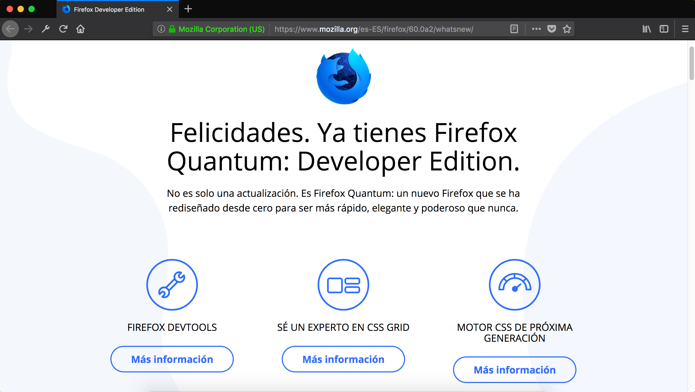
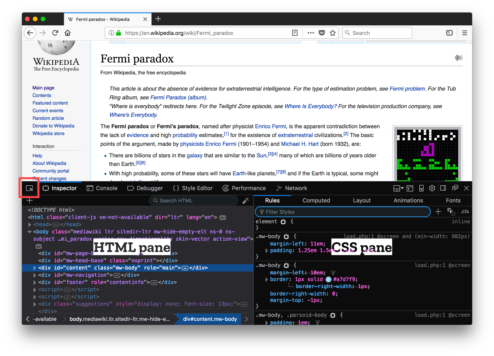
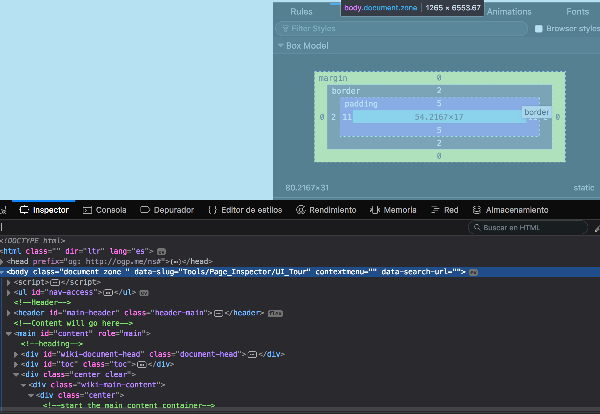
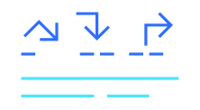
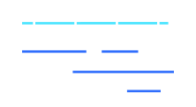

Firefox Quantum: Developer Edition
Mozillian,
@mozillaperu
,
hola@mozilla.pe
Firefox Developer Edition

Inspector
Utiliza el Inspector para examinar y modificar el HTML y CSS de una página.
Inspecciona y perfecciona el código para crear diseños perfectos.
Inspector - Desarrollo Web \ Inspector

Inspector - Tour

Tour por la UI
Consola
te permite interactuar con la pagina ejecutando expresiones Javascript en el contexto de la página.
Depurador

El depurador te permite inspeccionar paso a paso el código de JavaScript y examinar o modificar su estado ayudando a eliminar errores.
Red

Monitoriza las solicitudes de redes que pueden ralentizar o bloquear tu sitio.
Panel de Almacenamiento
Agregar, modificar y eliminar caché, cookies, bases de datos y datos de sesión.
Modo de Diseño Adaptable
Prueba los sitios en dispositivos emulados en tu navegador.
Edición visual
Mejora las animaciones, la alineación y el relleno.
Rendimiento
Desbloquea cuellos de botella, agiliza procesos, optimiza recursos.
Memoria
Encuentra pérdidas de memoria y haz que tu aplicación sea muy rápida.
Audio Web
La única herramienta de desarrollo para inspeccionar el API de audio web.
Borrador
Edita, escribe y ejecuta código JavaScript en tiempo real.
Editor de estilos
Edita y administra todas tus hojas de estillo CSS en tu navegador.